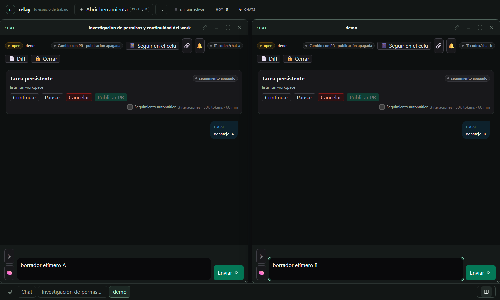
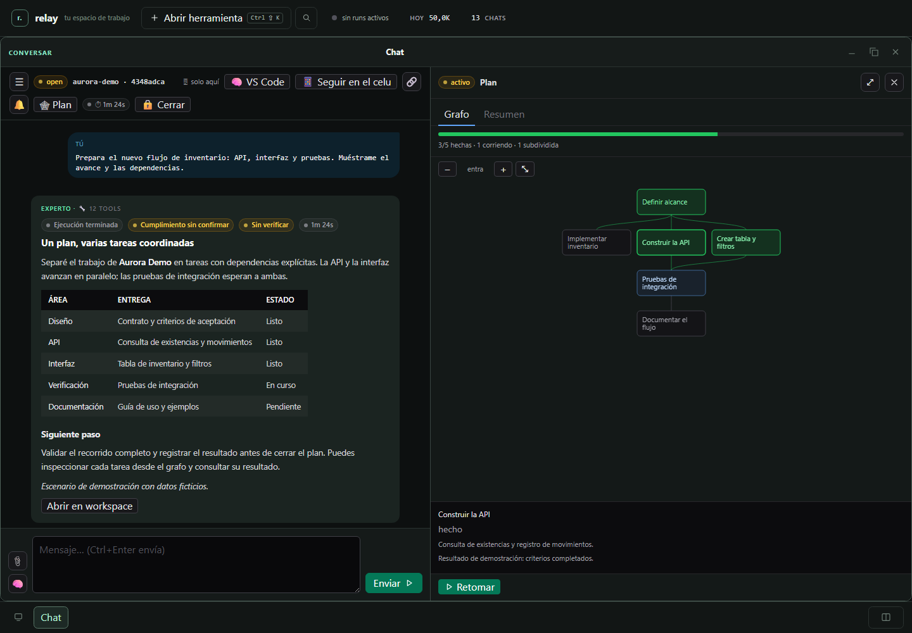
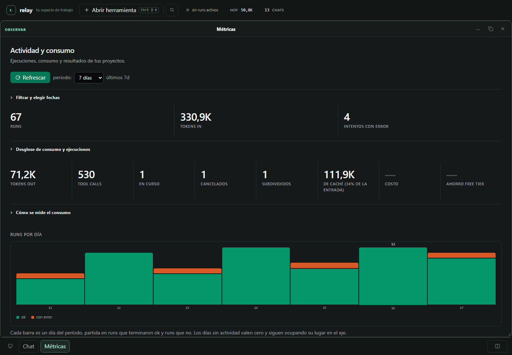

WORKSPACE LOCAL · CÓDIGO ABIERTO
Las tareas largas se adaptan mientras avanzan.
Sigue una migración frontend que se divide en subtareas, actualiza dependencias y conserva sus chats, rama y revisión en contexto.
La tarea padre queda en el historial mientras el plan avanza.
Datos ficticios · sin migración, cuenta ni PR reales.
SIGUE UNA TAREA LARGA
Un plan que se reorganiza mientras avanza el trabajo.
DEMO SIMULADA · Sin llamadas a IA, cuentas conectadas ni repositorios reales
Abre otro chat, renombra una ventana o deja un borrador independiente.
Lo que escribes queda en esta página. Las respuestas están preparadas; no las genera una IA.
TAREA FICTICIA / 042
Migrar la interfaz al nuevo cliente web
Al agotarse el presupuesto de la migración, el plan sustituye el nodo padre y actualiza la dependencia posterior.
ANTES · DEPENDENCIAS INICIALES
- Auditar rutas actualesCompletada
- Migrar cliente webEn curso
- Ejecutar pruebas visualesEspera la migración
DESPUÉS · EL PADRE SE SUSTITUYE POR SUBTAREAS
La tarea padre queda en el historial. La tarea dependiente espera a que terminen las subtareas que la reemplazan.
Ver diff ficticio · 2 archivos
Vinculado a la tarea #042 y al chat Documentación. No se modificaron archivos reales.
src/web-client/App.tsx
+ Mount the new client shell
+ Preserve task context
src/web-client/routes.tsx
+ Map migrated frontend routescodex/migrate-web-clientdemo / task-042PROYECTO FICTICIO · EQUIPO
El admin asigna acceso al proyecto
Ana (Admin) edita a Alex (Dev). El actor simulado actual, Alex, gestiona por separado su cuenta personal de GitHub.
| Persona | Rol | Proyectos | Acciones |
|---|---|---|---|
| Ana | Admin | Todos | — |
| Alex | Dev | Ninguno |
MI CUENTA · ACTOR SIMULADO: ALEX
Esta cuenta personal de GitHub pertenece a Alex; no representa un repositorio del proyecto.
PR DE EJEMPLO · TAREA #042
Publicar la PR es una acción separada
La admin Ana puede publicar el cambio ficticio después de que Alex continúe la tarea explícitamente. Publicar nunca significa hacer merge o integrar.
- 01Tarea continuada por Alex
Acción explícita de usuario; esta demo no ejecuta comandos.
- 02PR de ejemplo publicada por Admin Ana
Sin publicar. No se simula merge ni integración.
- 03Merge / integración
Fuera de este flujo. Una PR publicada permanece sin merge.
DENTRO DE RELAY
El próximo paso tiene contexto.
Varias conversaciones a la vista
Recupera una ventana con un clic, ponle un nombre y conserva su borrador mientras trabajas en otra tarea.

Un plan visible
Consulta dependencias y estados de cada nodo desde la conversación. El grafo conserva el historial de ejecución.

Actividad con evidencia
Revisa ejecuciones y consumo registrado por proyecto. Distingue trabajo completado, fallido y pendiente.

Todas las capturas usan datos locales ficticios. La aplicación Relay completa requiere instalación local y un proveedor de modelos configurado.
DE LA DEMO A TU EQUIPO
Explóralo. Léelo. Ejecútalo localmente.
Software experimental con licencia MIT. Validado en Windows con Python 3.11+ y PowerShell. El uso de proveedores de modelos puede tener su propio costo.
git clone https://github.com/FourBis/4bis.relay-showcase.git
cd 4bis.relay-showcaseSigue la guía de instalación para configurar el entorno local y el proveedor.
FOURBIS · JEREMÍAS BADILLA
¿Tienes un flujo de trabajo para mejorar?
Relay también muestra cómo construimos herramientas: alcance concreto, estado visible y trabajo que se puede revisar.